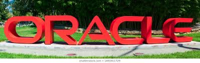

Oracle Corporation
Computer software company
Description
Description Oracle Corporation is an American multinational computer technology corporation headquartered in Redwood Shores, California. The company sells database software and technology, cloud engineered systems, and enterprise software products—particularly its own brands of database management systems. Wikipedia

Oracle Corporation
From Wikipedia, the free encyclopedia
Oracle Logo.svg
Oracle-October2011.JPG
Headquarters in Redwood City, California
Type - Public
Traded as
NYSE: ORCL
S&P 100 Component
S&P 500 Component
ISIN US68389X1054
Industry
Enterprise software
Cloud computing
Computer hardware
Founded June 16, 1977; 42 years ago
Santa Clara, California, U.S.[1]
Founders
Larry Ellison
Bob Miner
Ed Oates[2]
Headquarters Redwood City, California, United States
Area served
Worldwide
Key people
Larry Ellison (Executive Chairman & CTO)
Jeff Henley (Vice Chairman)
Safra Catz (CEO)
Products
Oracle Applications Oracle Database Oracle CloudEnterprise
ManagerFusion MiddlewareServersWorkstationsStorage(See Oracle products)
Services
Business softwareapplicationsconsulting
Revenue Increase US$39.50 billion (2019)[3]
Operating income
Increase US$13.53 billion (2019)[3]
Net income
Increase US$11.08 billion (2019)[3]
Total assets Decrease US$108.70 billion (2019)[3]
Total equity Decrease US$22.36 billion (2019)[3]
Number of employees
136,000 (2019)[4]
Subsidiaries List of Oracle subsidiaries
Website www.oracle.com/index.html
Larry Ellison, executive chairman of Oracle
Oracle Corporation is an American multinational computer technology corporation headquartered in Redwood Shores, California. The company sells database software and technology, cloud engineered systems, and enterprise software products—particularly its own brands of database management systems. In 2019, Oracle was the second-largest software company by revenue and market capitalization.[5]
The company also develops and builds tools for database development and systems of middle-tier software, enterprise resource planning (ERP) software, Human Capital Management (HCM) software, customer relationship management (CRM) software, and supply chain management (SCM) software.[6]
Contents
1 History
2 Finances
3 Products and services
3.1 Software
3.1.1 Databases
3.1.2 Middleware
3.1.2.1 Oracle Secure Enterprise Search
3.1.2.2 Oracle Beehive
3.1.3 Applications
3.1.3.1 Third-party applications
3.1.4 Enterprise management
3.1.5 Development software
3.1.6 File systems
3.1.7 Operating systems
3.2 Hardware
3.3 Services
3.3.1 Oracle Cloud
3.3.2 Other services
4 Marketing
4.1 Sales practices
4.2 Competition
4.2.1 Oracle and SAP
4.3 Slogans
4.4 Media
5 Controversies
5.1 Trashgate
5.2 "Can't break it, can't break in"
5.3 Relationship with John Ashcroft
5.4 Expeditionary Combat Support System
5.5 Cover Oregon Healthcare Exchange
6 Events
6.2 Justice Department lawsuit
6.3 Lawsuit against Google
6.4 Discontinuation of OpenSolaris
6.5 Discontinuation of OpenSSO
6.6 Mark Hurd as president
6.7 OpenOffice.org issue
6.8 HP and Oracle lawsuit
6.9 Foreign corrupt practices
6.10 GSA business bidding ban
7 People
8 Offices
9 Corporate structures
10 Sponsorships
11 See also
History
Larry Ellison co-founded Oracle Corporation in 1977 with Bob Miner and Ed Oates under the name Software Development Laboratories (SDL).[2] Ellison took inspiration[7] from the 1970 paper written by Edgar F. Codd on relational database management systems (RDBMS) named "A Relational Model of Data for Large Shared Data Banks."[8] He heard about the IBM System R database from an article in the IBM Research Journal provided by Oates. Ellison wanted to make Oracle's product compatible with System R, but failed to do so as IBM kept the error codes for their DBMS a secret. SDL changed its name to Relational Software, Inc (RSI) in 1979,[9] then again to Oracle Systems Corporation in 1983,[10] to align itself more closely with its flagship product Oracle Database. At this stage Bob Miner served as the company's senior programmer. On March 12, 1986, the company had its initial public offering.[11] In 1995, Oracle Systems Corporation changed its name to Oracle Corporation,[12] officially named Oracle, but sometimes referred to as Oracle Corporation, the name of the holding company.[13] Part of Oracle Corporation's early success arose from using the C programming language to implement its products. This eased porting to different operating systems most of which support C.[14]
Finances
Development since 2005[15]
| Year |
Revenue in mil. US$ |
Net Income in mil. US$ |
Price per Share in US$ |
Employees
|
| 2005 | 11,799 | 2,886 | 11.45 |
| 2006 | 14,380 | 3,381 | 13.60 |
| 2007 | 17,996 | 4,274 | 17.41 |
| 2008 | 22,430 | 5,521 | 17.86 |
| 2009 | 23,252 | 5,593 | 18.03 |
| 2010 | 26,820 | 6,135 | 23.02 |
| 2011 | 35,622 | 8,547 | 28.56 |
| 2012 | 37,121 | 9,981 | 27.37 |
| 2013 | 37,180 | 10,925 | 31.28 | 122,000 |
| 2014 | 38,275 | 10,955 | 37.72 | 122,000 |
| 2015 | 38,226 | 9,938 | 38.85 | 132,000 |
| 2016 | 37,047 | 8,901 | 37.94 | 136,000 |
| 2017 | 37,728 | 9,335 | 45.70 | 138,000 |
Oracle ranked No. 82 in the 2018 Fortune 500 list of the largest United States corporations by total revenue.[16] According to Bloomberg, Oracle's CEO-to-employee pay ratio is 1,205:1. The CEO's compensation in 2017 was $108,295,023. Oracle is one of the approved employers of ACCA and the median employee compensation rate was $89,887.[17]
Product and Services
Oracle designs, manufactures, and sells both software and hardware products, as well as offering services that complement them (such as financing, training, consulting, and hosting services). Many of the products have been added to Oracle's portfolio through acquisitions.
Software
Oracle's E-delivery service (Oracle Software Delivery Cloud) provides generic downloadable Oracle software and documentation.[18]
Databases
Oracle Database
Release 10: In 2004, Oracle Corporation shipped release 10g (g standing for "grid") as the then latest version of Oracle Database. (Oracle Application Server 10g using Java EE integrated with the server part of that version of the database, making it possible to deploy web-technology applications. The application server comprised the first middle-tier software designed for grid computing. The interrelationship between Oracle 10g and Java allowed developers to set up stored procedures written in the Java language, as well as, those written in the traditional Oracle database programming language, PL/SQL.)
Release 11: Release 11g became available in 2007. Oracle Corporation released Oracle Database 11g Release 2 in September 2009. This version was available in four commercial editions—Enterprise Edition, Standard Edition, Standard Edition One, and Personal Edition—and in one free edition—the Express Edition. The licensing of these editions shows various restrictions and obligations that were called complex by licensing expert Freirich Florea.[19] The Enterprise Edition (DB EE), the most expensive of the Database Editions, has the fewest restrictions—but nevertheless has complex licensing. Oracle Corporation constrains the Standard Edition (DB SE) and Standard Edition One (SE1) with more licensing restrictions, in accordance with their lower price.
Release 12: Release 12c (c standing for "cloud") became available on July 1, 2013.[20]
Oracle Corporation has acquired and developed the following additional database technologies:
Berkeley DB, which offers embedded database processing
Oracle Rdb, a relational database system running on OpenVMS platforms. Oracle acquired Rdb in 1994 from Digital Equipment Corporation. Oracle has since made many enhancements to this product and development continues as of 2008.
TimesTen, which features in-memory database operations
Oracle Essbase, which continues the Hyperion Essbase tradition of multi-dimensional database management
MySQL, a relational database management system licensed under the GNU General Public License, initially developed by MySQL AB
Oracle NoSQL Database, a scalable, distributed key-value NoSQL database[21]
Middleware
Main article: Oracle Fusion Middleware
Oracle Fusion Middleware is a family of middleware software products, including (for instance) application server, system integration, business process management (BPM), user interaction, content management, identity management and business intelligence (BI) products.
Oracle Secure Enterprise Search
Oracle Beehive
Oracle Fusion Applications
Oracle Social Engagement and Monitoring (SEM) System –
Oracle E-Business Suite
PeopleSoft Enterprise
Siebel
JD Edwards
JD Edwards EnterpriseOne
JD Edwards World
Merchandise Operations Management (Formerly Retek)
Planning & Optimisation
Store Operations (Formerly 360Commerce)
Development of applications commonly takes place in Java (using Oracle JDeveloper) or through PL/SQL (using, for example, Oracle Forms and Oracle Reports/BIPublisher).[citation needed]
Oracle Corporation has started[citation needed] a drive toward "wizard"-driven environments with a view to enabling non-programmers to produce simple data-driven applications.
Third-party applications
Oracle Corporation works with "Oracle Certified Partners" to enhance its overall product marketing. The variety of applications from third-party vendors includes database applications for archiving, splitting and control, ERP and CRM systems, as well as more niche and focused products providing a range of commercial functions in areas like human resources, financial control and governance, risk management, and compliance (GRC). Vendors include Hewlett-Packard, Creoal Consulting, UC4 Software,[25] Motus,[26] and Knoa Software.[27]
Enterprise management
Main article: Oracle Enterprise Manager
Oracle Enterprise Manager (OEM) provides web-based monitoring and management tools for Oracle products (and for some third-party software), including database management, middleware management, application management, hardware and virtualization management and cloud management.[28]
The Primavera products of Oracle's Construction & Engineering Global Business Unit (CEGBU) consist of project-management software.[29]
Development software
Oracle Corporation's tools for developing applications include (among others):
Oracle Designer
– a CASE tool which integrates with Oracle Developer Suite
Oracle Developer
– which consists of Oracle Forms, Oracle Discoverer and Oracle Reports
Oracle JDeveloper
, a freeware IDE
NetBeans, a Java-based software-development platform
Oracle Application Express
– also known as APEX; for web-oriented development
Oracle SQL Developer, an integrated development environment for working with SQL-based databases
Oracle SQL*Plus Worksheet, a component of Oracle Enterprise Manager (OEM)
OEPE, Oracle Enterprise Pack for Eclipse
Open Java Development Kit
Oracle Developer Studio – a software generation system for the development of C, C++, Fortran, and Java software
Many external and third-party tools make the Oracle database administrator's tasks easier.[citation needed]
Oracle Database Appliance[32]
Big Data Appliance
– integrated map-reduce/big data solution[33]
SPARC SuperCluster T4-4
– a general purpose engineered system[34]
Services
Oracle Cloud
Oracle Cloud is a cloud computing service offered by Oracle Corporation providing servers, storage, network, applications and services through a global network of Oracle Corporation managed data centers. The company allows these services to be provisioned on demand over the Internet.[35]
Software as a Service (SaaS)
[37]
Enterprise applications: SCM, EPM, HCM, ERP and CX SaaS offerings[38]
Platform as a Service (PaaS)
[37]
Oracle has branded its Platform as a Service as Oracle Cloud Platform. Oracle Cloud Platform include Data Management, Application Development, Integration, Content and Experience, Business Analytics, Management and Security.[39][40]
Platform services on which to build and deploy applications or extend SaaS applications: database, Java application server, mobile, business analytics, integration, process, big data, Internet of Things, Node.js etc.[41]
Infrastructure as a Service (IaaS)
[37]
Oracle has branded its Infrastructure as a Service as Oracle Cloud Infrastructure (OCI). Oracle Cloud Infrastructure offerings include the following services.[42]
Compute Service
Storage Service
Network Service
On July 28, 2016 Oracle bought NetSuite, the very first cloud company, for $9.3 billion.[43] On May 16, 2018 Oracle announced that it had acquired DataScience.com, a privately held cloud workspace platform for data science projects and workloads.[44]
Other services
Oracle Consulting – technical and business expert services
Oracle Financing
Oracle Support
Product support
: Oracle Corporation identifies its customers and their support entitlements using CSI (Customer Support Identifier) codes.[45] Registered customers can submit Service Requests (SRs)[46]—usually via the web-accessible My Oracle Support[47] (MOS),[48] a re-incarnation of Oracle Metalink[49] with web access administered by a site Customer User Administrator (CUA).[50]
Critical Patch Updates: since 2005 Oracle Corporation has grouped collections of patches and security fixes for its products each quarter into a "Critical Patch Update" (CPU), released each January, April, July and October.[51]
Oracle Configuration Manager (OCM, previously Customer Configuration repository or CCR) gathers and uploads details of the configuration of Oracle software.[52]
Oracle Auto Service Request (ASR) automatically creates Service Requests for specific hardware faults on qualified Oracle server, storage, Oracle Exadata, and Oracle Exalogic products.[53]
My Oracle Support Community (MOSC)[54]
Oracle University (training in Oracle products)[55]
Oracle Certification Program
NetSuite
Social Impact program assists nonprofits with moving operations to the cloud. In October 2018, Oracle announced the expansion of the program to include product donation, pro bono expansion and online community building.[56]
Oracle Financials was ranked in the Top 20 Most Popular Accounting Software Infographic by Capterra in 2014, beating out SAP and a number of their other competitors.[65]
Oracle and SAP
From 1988, Oracle Corporation and the German company SAP AG had a decade-long history of cooperation, beginning with the integration of SAP's R/3 enterprise application suite with Oracle's relational database products. Despite the SAP partnership with Microsoft, and the increasing integration of SAP applications with Microsoft products (such as Microsoft SQL Server, a competitor to Oracle Database), Oracle and SAP continue their cooperation. According to Oracle Corporation, the majority of SAP's customers use Oracle databases.[66]
Slogans
"Information driven"[74][75]
For the Oracle Database: "Can't break it, can't break in"[76] and "Unbreakable"[77]
Enabling the Information Age[78]
Enabling the Information Age Through Network Computing"[79][80][81]
As of 2008: "The Information Company"[82]
As of 2010: "Software. Hardware. Complete."[83]
As of late 2010: "Hardware and Software, Engineered to Work Together"[84][85]
As of mid 2015: "Integrated Cloud Applications and Platform Services"[86]
Media
Oracle Corporation produces and distributes the "Oracle ClearView" series of videos as part of its marketing mix.[87]
Events
Acquisition of Sun Microsystems
Main article: Sun acquisition by Oracle
On January 27, 2010, Oracle announced it had completed its acquisition of Sun Microsystems—valued at more than $7 billion—
Lawsuit against Google
Main article: Oracle v. Google
Background
Oracle, the plaintiff, bought the Java computer programing language when it acquired Sun Microsystems in January 2010.[113] The Java software includes sets of pre-developed software code in order to accomplish common tasks consistently among programs and apps. The pre-developed code is organized into separate "packages" which each contain a set of "classes". Each class contains numerous methods, which instruct a program or app to do a certain task. Software developers "became accustomed to using Java’s designations at the package, class, and method level".[114]
Oracle and Google (the defendant) tried to negotiate an agreement for Oracle to license Java to Google, which would have allowed Google to use Java in developing programs for mobile devices using the Android operating system. However, the two companies never reached an agreement. After negotiations failed, Google created its own programming platform, which was based on Java, and contained a mix of 37 copied Java packages and new packages developed by Google.[114]
Offices
Oracle Corporation has its overall headquarters on the San Francisco Peninsula in the Redwood Shores area of Redwood City, adjacent to Belmont and near San Carlos Airport (IATA airport code: SQL).
Oracle HQ stands on the former site of Marine World/Africa USA, which moved from Redwood Shores to Vallejo in 1986. Oracle Corporation originally leased two buildings on the site, moving its finance and administration departments from the corporation's former headquarters on Davis Drive, Belmont, California. Eventually, Oracle purchased the complex and constructed a further four main buildings.
The distinctive Oracle Parkway buildings, nicknamed the Emerald City,[141] served as sets for the futuristic headquarters of the fictional company "NorthAm Robotics" in the Robin Williams film Bicentennial Man (1999).[142] The campus represented the headquarters of Cyberdyne Systems in the movie Terminator Genisys (2015).[143]
Oracle headquarters in Redwood Shores, California.
300 Oracle Parkway at Oracle Corporation headquarters in Redwood Shores, California.
Oracle Aoyama Center Building, with Lexus International Gallery Aoyama
Oracle HQ, with Oracle Plaza building in left foreground
The Oracle Conference Center at Oracle Corporation headquarters in Redwood Shores, California
Fountain in the Oracle lake, Redwood Shores
Oracle Corporation has a major business campus at Thames Valley Park in Reading in England
Oracle in Markham, Ontario
Corporate structures
Oracle Corporation operates in multiple markets and has acquired several companies which formerly functioned autonomously. In some cases these provided the starting points for global business units (GBUs) targeting particular vertical markets.[144] Oracle Corporation GBUs include:
Communications
Construction and engineering - formerly the Primavera GBU
Financial services
Food and Beverages
Health sciences
Hospitality
Retail
Utilities
Sponsorships
Copyright© 2020